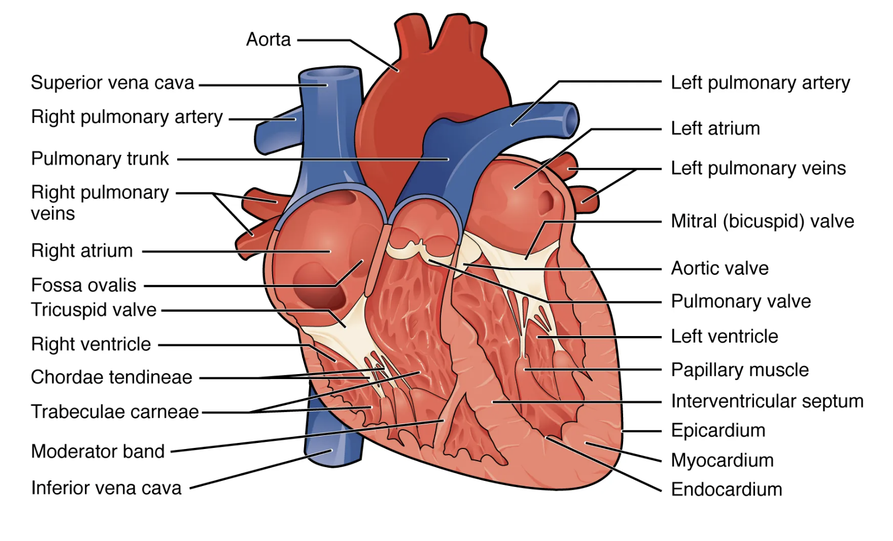
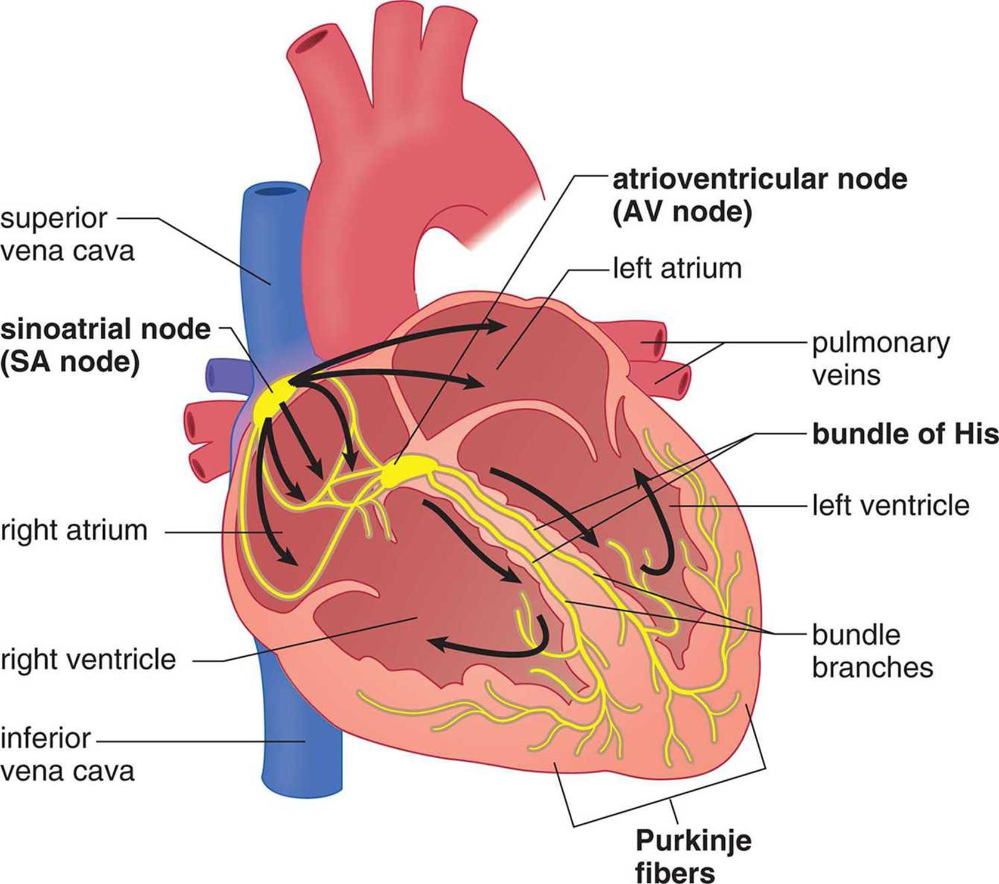
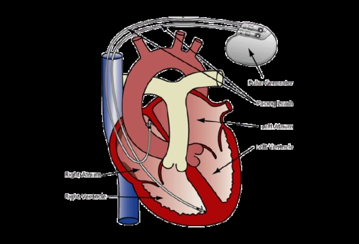

Section 1: How the Heart Pumps Blood
Every day even though you don't think about it, your heart is constantly beating. How is this you may ask, why does the heart know when to speed up or slow down without thinking about it. The simple answer is that your heart, In this chapter, you will learn about how the heart works, reacting to both extrinsic and intrinsic factors.
Section 1.A: Mechanical Components/Blood Flow
The heart is an incredibly complicated muscular organ that circulates blood through the lungs and throughout the body, helping make sure that oxygen and nutrients are delivered to cells and that waste products are removed. In a human, the heart is made up of four hollow chambers: the right atrium, the right ventricle, the left atrium, and the left ventricle (Ansari). The right atrium receives deoxygenated blood (blood without oxygen) from the body and sends it below to the right ventricle. This blood is then pumped back to the lungs in order for the carbon dioxide to be removed and for the blood to become oxygenated again.
The oxygenated blood from the lungs then travels to the left atrium, which pumps the blood below to the left ventricle, which then pumps it to the rest of the body. The heart also maintains the direction of blood flow throughout the body using valves to prevent blood from flowing backwards (backflow). The tricuspid valve lies between the right atrium and right ventricle and prevents backflow into the atrium. Similarly, the pulmonary valve sits between the right ventricle and the pulmonary artery, the main blood vessel that sends blood from the heart to the lungs. The mitral (bicuspid) valve also controls blood flow between the left atrium and left ventricle. Lastly, the aortic valve sits between the left ventricle and aorta (main blood vessel that sends blood from the heart to the rest of the body). The valves open and close as necessary to allow blood to flow while preventing backflow, and are mostly controlled by pressure differences between the chambers.

Heart’s Mechanical Function: Deoxygenated blood from the body travels through the superior and inferior vena cava into the right atrium. After passing through the tricuspid valve, the blood then flows into the right ventricle, where it is pumped through the pulmonary valve and into the pulmonary artery. After the blood passes through the lungs, it travels back to the heart via the pulmonary veins into the left atrium. Next, the blood passes through the mitral valve and into the left ventricle, where it is pumped through the aortic valve and into the aorta to send blood to the rest of the body.
Section 1.B: Electrical Rhythm
The heart also has a self-generating electrical system that ensures the ventricles and atria contract and release at reasonable times to maintain regular heartbeat patterns and circulation. One important component of this system is the sinoatrial (SA) node, which is located in the upper wall of the right atrium (Chan-Dewar). The SA node is a small collection of electrical cells that act as the primary pacemaker of the heart, generating electrical impulses at a rate of 60-100 times per minute that tell the atria to contract and push blood into the ventricles. Next, the atrioventricular node (AV) node, located in the lower back region of the heart, receives the signal from the SA node and briefly delays its passage by 0.1 seconds until the ventricles can fully fill with blood before they contract. After the impulse passes through the AV node, it then travels down the Bundle of His, a collection of specialized heart muscle cells that transmits the impulse to the ventricles. Purkinje fibers receive impulses from the bundle branches and deliver them quickly throughout the ventricles, which ensures coordinated contraction of the ventricles to pump the blood out of the heart.

Heart’s Electrical Function: The electrical signal travels from the SA node to the AV node, then down the Bundle of His and Purkinje fibers to ensure the heart follows a coordinated contraction pattern (Diagram of the heart’s electrical conduction system)
Section 1.C: Circadian Clocks
Over a regular 24 hours, heart rate is the highest during the day and lowest during the night, when we sleep. During the night, not only is the gap between beats longer, but also the conduction through the AV node and ventricles are slower (Black). When a study forced people on an unnatural non-24-hour schedule, their heart rates still followed the roughly 24-hour circadian schedule, with low heart rates during the times they should have been sleeping (Thosar). However, they still had lower heart rates during actual artificial sleep times than during waking hours. This suggests that heart rate fluctuations are due to a mixture of sleep patterns and an internal circadian clock. The body’s master circadian clock, the suprachiasmatic nucleus (SCN) of the hypothalamus, tries to maintain the roughly-24 hour cycle with heart rate.
Section 1.D: Extrinsic Factors for Heart Clocks
There are many extrinsic factors that cause heart clock variation, including environmental factors and lifestyles factors, which will be discussed later in the chapter. Over time, your body has evolved to take certain environmental information and use it to prepare for what it thinks comes next. With heart rate and the environment, extrinsic factors are typically tied to the circadian rhythm and sleep. These factors include temperature, time of day, light exposure, and altitude, all of which are directly related to the body’s circadian rhythm. For time of day (related to light exposure), heart rate decreases late at night and spikes early in the morning as the body wakes up.
Section 2: Sympathetic vs Parasympathetic Control
The nervous system has two controls on the heart and how quickly it beats: the sympathetic nervous system and the parasympathetic nervous system. The sympathetic nervous system speeds up the heartbeat, whereas the parasympathetic nervous system slows it down, both through chemical signalling on the Sinoatrial (SA) node or the natural pacemaker of the heart.

parasympathetic nervous system which relaxes the body. In this diagram the central nervous
system (CNS) sends a message from the medulla through the vagus nerve to the Sinoatrial (SA) and the atrioventricular (AV) node via Acetylcholine(ACh) a neurosignal to slow down the heart. On the right side is the depiction of the pathway of the sympathetic nervous system in which the brain through the sympathetic ganglia chain creates a signalling cascade that releases neuroepinephering(NE) into the SA and AV nodes to speed up the heart.
Section 2.A: Sympathetic Nervous System
The sympathetic nervous system is located in the thoracic spinal nerves and is a group of 12 nerves that sends signals via neurons and chemical signals to the heart. The sympathetic nervous system causes the heart to go into a flight-or-fight response, stimulating the SA node to increase heart rate. There are several different reasons that would explain the need for the stimulation of the sympathetic nervous system, including both extrinsic and intrinsic factors (displayed in the table). All of these factors stem from the body needing more oxygen and glucose sent to different muscles and organs.
Section 2.B: Parasympathetic Nervous System
The parasympathetic nervous system is mainly located in the brainstem with the Vagus nerve being the main signalling pathway. The parasympathetic nervous system is tied to the slowing down of the heart. Similar to the sympathetic nervous system, it uses chemical signals on the SA node to change the heart rate. The parasympathetic nervous system is tied to rest and relaxation and conserves energy when high output is not needed.
Section 3: Heart Function with Increased Endurance Training
Section 3.A: What is Endurance Training?
Endurance, or aerobic training is the process of repeatedly subjecting the heart to exercise at levels lower than the person’s maximal heart rate. Running, cycling, and swimming are common examples. A single session of endurance training places an acute load on the cardiac muscle, which when the body is subjected to over repeated sessions over weeks, causes the load to add stimulus which causes the heart to adapt. This is the central idea of the chapter: trying to understand how the heart can adapt to cycles of habit.
Section 3.B: Structural and Functional adaptation
Regular endurance training leads to changes in the heart itself. The chambers, particularly the left ventricle, can enlarge and fill with more blood between beats, so each contraction ejects a larger volume of blood. This volume per beat is called stroke volume. Because each beat moves more blood, the heart can deliver the same amount of blood with less strain on the heart. Where this can be seen is in your resting heart rate, or your heart rate when you are sleeping in the most restful position. You can notice this also through taking five minutes and sitting on a couch or chair not doing anything then taking your heart rate, notice how it drops.
Section 3.C: Autonomic Nervous System Adaption
As noted earlier in the parasympathetic and sympathetic nervous system section, the heart is controlled by these two systems to either speed up the heart or slow it down. Endurance tends to shift the resting balance toward greater parasympathetic influence which contributes to the lower resting heart rate as described above.
Section 3.D: Training the Clock as Well as the Heart
Many body functions, including heart rate and blood pressure, follow rhythms. As stated priorly in this chapter the heart rate and blood pressure rhythms are influenced by zeitgebers which allow for the outside world to create rhythms, a process called entrainment. Light is the best-known zeitgeber, but physical activity is a nonphotic zeitgeber. In a sense, exercise can be used to signal the body what the time is.
If exercise takes place at about the same time each day, the same logic may apply. A regular session becomes a predictable daily event, and the cardiovascular system will start anticipating it, raising heart rate and sympathetic activity slightly in advance, so the heart is already ready to speed up when the workout begins. This anticipatory effect is a plausible consequence of entrainment.
Research does show that exercise timing can shift the heart’s daily rhythm “Morning or evening exercise: effects on the heart rate circadian rhythm above the Arctic Circle.”. In one study participants performed the same routine in the morning or the evening, and evening exercise during a dark winter period delayed the peak of the heart rate rhythm compared to morning exercise and with a control variable which suggests that exercise is a zeitgeber.
Section 4: Heart Long-term Health Impacts
Section 4.A: Aging
A number of factors, including aging, cardiovascular and metabolic conditions, lifestyle, and environment, can affect the heart’s adaptability and strength. For example, the maximum oxygen used by the body’s cells per minute during intensive exercise, also known as VO2max, drops by about half between the ages of 20 and 80 for both men and women (Strait). This decrease in maximum oxygen is because two separate measures each decline by about 25% as we age: the amount of blood pumped per minute (also known as cardiac output), and the amount of oxygen taken out of the blood by cells (Strait). The first measure, the amount of blood pumped per minute, is equivalent to the heart rate multiplied by the amount of blood pushed out with each contraction. Since the amount per contraction stays roughly the same as we age, the drop in cardiac output is mostly due to the drop in the maximum heart rate. While healthy aging does not generally change the resting heart rate, the maximum heart rate declines significantly.
In fact, peak heart rate during exhaustive exercise falls by 25% for both men and women between ages 20 and 80 (Strait). The heart’s maximum heart rate decreases because of various aging-related changes to the SA node. For instance, fat can build up around the SA node and impede its ability to send electrical signals throughout the heart (Strait). Additionally, fewer than 10% of the number of SA node cells seen in younger adults remain by age 75 (Strait).
As we age, the electrical signal within each heart cell lasts longer, which makes each contraction take longer and limits how fast the heart can contract. Contraction is also less efficient due to certain walls of the heart getting thicker and more round as we age in order to cope with stiffer arteries (Strait). The aging heart also becomes less responsive to adrenaline, a hormone that usually signals the heart to contract faster and more completely during exercise or stress. Since older hearts relax slower, the fast suction that younger hearts rely on to bring blood into the heart is weaker in older hearts. But since older hearts beat slower during exercise anyways, there is usually more time for the blood to trickle into the heart so it can get just as full. However, when the older heart needs to beat at maximum capacity and recycle as much blood as possible to ensure enough oxygen circulation, it is not able to compensate.
Section 4.B: Cardiovascular and Metabolic Conditions
In addition to age, cardiovascular and metabolic conditions can also affect the heart’s natural rhythm. In obesity, there is extra blood in the body in order for oxygen and nutrients to reach the extra body fat (Wiley). This extra blood means that the heart has to pump more every minute, which means it is working harder even at rest. Obesity also activates certain systems in the body that raise blood pressure (Wiley). Since the heart has to pump more blood under higher pressure, its muscle walls respond by thickening, which lowers the amount of space left for blood to take up and makes it more difficult to fill the heart. Additionally, obesity can cause fat to build up in the heart, which can lead to scarring (Wiley). The fat would release chemical signals that can cause inflammation and damage, which is repaired by the body by creating the stiff scar tissue. This stiff scarring can make it harder for the heart to relax and fill with blood as easily. These factors all contribute to higher heart failure rates in obese people, mostly due to the heart not being able to compensate for the added strain. In fact, it was found that the risk of developing heart failure increases on average by 5% in men and 7% in women for every 1-unit BMI increase (Wiley).
Section 4.C: Lifestyle Choices
Heart clocks can also be significantly affected by lifestyle choices, such as sleeping schedules and smoking. As described earlier, the heart follows a roughly 24-hour cycle, controlled by the body’s SCN (Chellappa). When the SCN’s circadian clock falls out of alignment, meaning that the body’s internal clock does not match the timing of sleep and daylight patterns, the heart clock can also become less healthy. Shift work, for example, has been shown to be linked to higher rates of various cardiovascular diseases. One study explored what happens when healthy, usual day-shift workers underwent three day-shifts and three night shifts. They found that the circadian misalignment due to the night shift work increased blood pressure during awake hours, and that the healthy decrease in systolic blood pressure that normally occurs during sleep was dampened. It was also found that their parasympathetic activity, which slows the heart and protects it from working too hard, was significantly decreased during awake hours (Chellapa). When shift workers (instead of primarily day-workers) were similarly put through the same circadian alignments versus misalignment study, it was found that their blood pressure was also elevated, especially during sleep (Chellappa). This suggests that even people who regularly do shift work do not adapt their heart clocks to be robust to circadian misalignment. One possible reason for the lack of ability for humans to adjust to shift work’s shifted sleep schedules is that there is not enough time for the internal clock (which uses slow-changing melatonin and cortisol levels) to adapt. And since the internal clock heavily regulates the heart clock, the heart clock can also be messed up.
Smoking can also heavily disrupt the heart’s rhythm, since it disrupts the autonomic nervous system, which controls heart rate. The autonomic nervous system includes the sympathetic nervous system (SNS), which increases the heart rate, and the parasympathetic nervous system (PNS), which lowers the heart rate (Dinas). The heart’s rhythm depends on a balance between the SNS and PNS’ activity. Heart rate variability (HRV), which is the variation in time between consecutive heartbeats, shows how activated one nervous system is compared to the other. PNS acts quicker than SNS, so when it is activated the heart changes a lot beat-to-beat, resulting in higher HRV. Generally, a low HRV means a less healthy, less adaptable heart and has been linked to higher risk of heart disease. Studies have shown that both short-term and long-term smoking increase sympathetic activity and decrease parasympathetic activity, thus decreasing overall HRV. Nicotine is thought to be the main cause of decreased overall HRV, because it increases the release of certain chemicals that activate the SNS, which might make the heart more vulnerable to dangerous arrhythmias, or irregularities in heart patterns (Dinas). A study found that mice that were exposed to smoke for three days were more likely to get arrhythmias like atrial fibrillation and tachycardia (Dinas).
| Mechanical Differences | Electrical And Autonomic Differences | Effect on the Heart’s Clock | |
|---|---|---|---|
| Healthy Heart | ● Not too stiff ● Walls aren’t too thick or too weak ● Fast refill time | ● Working SA node ● Signals can be processed through the heart cells quickly | ● Normal sinus rhythm ● Can easily adapt to exercise |
| Heart in Old Patients | ● Stiffer walls ● Slower refill time, can’t keep up during intense exercise | ● Fewer SA node cells ● Signals last longer in each heart cell ● Less | ● Lower maximum heart rate |
| responsive to adrenaline | |||
|---|---|---|---|
| Hearts in Obese Patients | ● Increased blood pressure ● Scarring leads to stiffer walls | ● Pumps more blood per minute | ● Increased risk for heart failure |
| Hearts in Patients with Circadian Misalignment | ● Increased blood pressure | ● Decreased parasympathe tic activity | ● Higher rates of heart disease |
| Hearts in Patients Who are Exposed to Smoke | ● Low HRV | ● Decreased parasympathe tic activity | ● Higher risk for heart arrhythmias |
Section 5: Rhythm Disruption
Section 5.A: SA Node Dysfunction
Disruptions, failures, or changes in parts of the heart can also affect heart rhythm. For example, when the SA node, which is the primary pacemaker of the heart, fires too slowly, it is called sinus bradycardia. Sinus bradycardia is often caused by a more active parasympathetic system, and it can even be normal in athletes. A more serious problem happens if the SA node ages or if it loses blood supply, which can cause sinus node dysfunction. There are three main types: in sinus pause, the SA node fires late; in sinus arrest, it fails to fire at all; and in SA exit block, it fires but the signal cannot leave the node (Desai). These failures cause the heart to beat too slowly or completely skip beats, which means less blood reaches the brain and patients can feel dizzy or even faint. These patients usually need an artificial pacemaker to keep the heart in normal sinus rhythm (Desai).
Section 5.B: Electrical Conduction Problems
In an AV block, the electrical signal that usually passes through the AV node is delayed or stopped. In first-degree AV block, all signals go through but they are abnormally delayed (Desai). First-degree AV block can happen if parasympathetic nervous system is increased, conduction through the AV node is somehow delayed, or due to certain medications. In a second-degree AV block, some heartbeats get dropped when the signal from the atria fails to pass through the AV node to the ventricles, meaning they never contract (Desai). This skipped beat can be after a gradually lengthening delay, known as Mobitz I, or at random, known as Mobitz II (Desai). For both first and second degree AV blocks, people can often be asymptomatic. If they do have symptoms, they can experience dizziness or even fainting, similar to SA node dysfunction (Desai). In a third-degree or complete AV block, no signals go through and the atria and ventricles have to beat independently. The ventricles need to rely on a much slower, unreliable backup rhythm. Since third degree causes a significant decrease in heart rate, it can lead to significant bradycardia (slow heart rate), hypotension (low blood pressure), and even heart failure (Desai).
Section 5.C: Arrhythmias
Arrhythmias are when the heart’s beating pattern is abnormal, and the different types are divided according to whether it is beating slower or faster than normal. Bradyarrhythmias are when the heart beats slower than 60 beats per minute, and tachyarrhythmias are when it beats faster than 100 (Desai). Tachyarrhythmias are further divided depending on what part of the heart starts it: supraventricular if it starts above the AV node, or ventricular if it starts below it (Desai). The most common arrhythmia is atrial fibrillation, a type of supraventricular arrhythmia, when many small electrical signals loop in circles across the atria instead of going through one organized path. Atrial fibrillation is marked by the atria quivering instead of squeezing all at once. Ventricular arrhythmias are usually a lot more dangerous than supraventricular arrhythmias, because they are what drives the blood to the body. For example, Ventricular Tachycardia is a large cause of sudden cardiac-related deaths in the US (Desai).
Section 5.D: Heart Failure
Heart failure is when the heart cannot fill with or push out blood properly or fast enough. The leading cause of heart failure is ischemic heart disease (Shams), when the heart muscle is continuously not recieving enough blood flow to function well. Heart failure is classified by the percentage of blood the heart holds that it actually pushes out each beat, called ejection fraction: reduced is when it pumps out 40% or less, mildly reduced is between 41-49%, and preserved is 50% or more (when the pump seems to work but heart failure still occurs) (Shams). Heart failure with reduced or mildly reduced ejection fraction is usually due to heart cell damage, such as in ischemia, which means the heart cannot squeeze as hard (Shams). This weak squeezing causes blood to back up in the body and pile up in the lungs, which can cause further problems. In heart failure with preserved ejection fraction, the problem is usually due to the ventricles being too stiff and unable to relax enough to fill up properly between beats (Shams).
Section 6: Supporting Heart Rhythms Artificially
Section 6.A: Supporting Electrical Rhythm
When a heart’s natural rhythm fails, some medical devices can help restore regular rhythm. For example, a pacemaker can be used when the heart beats too slowly due to bradycardia from sinus node dysfunction or AV block (Sahu). Pacemakers today have three main components: a pulse generator for creating small electrical signals, leads to send the pulses to the heart, and sensing circuitry to see if the heart needs artificial help (for example, if it is beating too slow) (Sahu). The leads are usually threaded through a small incision under the collarbone, then fastened into the heart muscle with small hooks or screws (Sahu). Once inserted, doctors can change the pacing rate, voltage, and pulse length of the electrical pulses (Sahu). Single-chamber pacemakers, which stimulate either the atrium or ventricle, are the most common. In comparison, dual-chamber pacemakers coordinate both the atria and ventricles in order to help produce a more natural heart rhythm (Sahu). Modern pacemakers can also imitate how the heart rate increases during exercise.

Pacemaker: A pacemaker’s leads are threaded into the heart chambers via a vein (Diagram of a heart with a pacemaker) For more dangerous arrhythmias like ventricular tachycardia and ventricular fibrillation, doctors instead use an implantable cardioverter defibrillator (ICD) (Sahu). An ICD helps prevent sudden cardiac death by looking for (usually rare) dangerous rhythms and deliver high-energy shocks to “restart” the heart and restore normal rhythms (Sahu). An ICD has a battery, a capacitor that stores and delivers electrical charge, and a microprocessor that senses the heart’s rhythm (Sahu). ICDs can also dually function as a pacemaker (Sahu).

ICDs: A radiology photo of an ICD and its placement relative to the heart. (X-ray showing placed ICD)
Section 6.B: Supporting Mechanical Function
When the heart becomes too weak to pump blood properly, mechanical circulatory support (MCS) devices are used (Braga). There are two main types: temporary devices, which support the heart for hours to weeks, or permanent devices, which can be used for months or years (Braga). One example of a temporary MCS device is the venoarterial extracorporeal membrane oxygenation (VA-ECMO). In VA-ECMO, blood is drawn from the right atrium, pumped to an oxygenating membrane outside the body, and then returned to the aorta (Braga). However, it can only be used for a few days to weeks and has some complications such as vessel damage, blood clots, and increased pressure in the left ventricle (Braga). On the other hand, a left ventricular assist device, or LVAD, is used for long-term support (Braga). The HeartMate 3 is the most widely used LVAD, and it is implanted inside the body, taking blood from the tip of the left ventricle and pumping it into the aorta (Braga). LVADs still carry some risks, such as infection or bleeding, but they can support a patient permanently or until they get a heart transplant (Braga). HeartMate 3 was shown to have 2-year survival rates ranging from 79% to 83.4%, which is very close to survival rates after actual heart transplants (Braga).

LVAD: LVADs mechanically pump blood from the tip of the left ventricle to the aorta (Left ventricular assist device connected to heart)